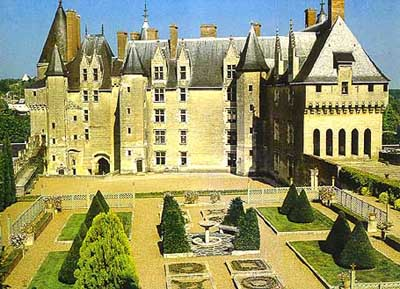
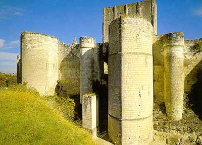
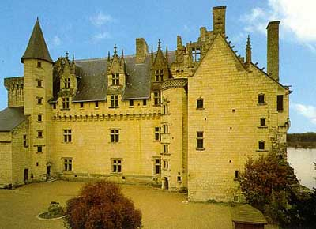
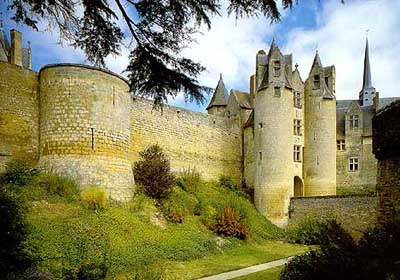
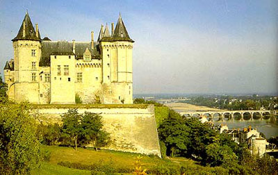

Анжер, лежащий на берегах реки Майен, с древнейших времен был занят племенами гордых кельтов, упорно сопротивлявшихся вторжению римлян. В IX веке, по прошествии долгих лет набегов норманнов, Фульк Нерра, граф Анжуйский, воздвиг здесь укрепленный замок.

В замке запечетлен образ его создателя - грозного Фулька Нерры, графа Анжуйского, прозванного в свое время "Черным соколом". Это был классический тип феодального разбойника: жестокость, вероломство и цинизм, поставленные на службу его ненасытному желанию власти, сочетались у него с суеверной набожностью, пределы которой не знали границ и стали достоянием легенд.

История замка Лош тесно связана с историей Франции. Изначально он принадлежал графам Анжуйским. Начиная с Х века на вершине скалистого утеса возвышалась деревянная башня, служившая защитой для прилегающего к ней селения и связанная с ним подземными переходами, проложенными в скалах.

Персонаж, наиболее знаменитый во всей истории замка, - без сомнения Шарль де Камбес, которого обессмертил Александр Дюма-отец в своем романе "Графиня де Монсоро". Это литературное произведение, созданное три века спустя после описываемых событий, излагает историю Шарля, его жены Франсуазы (не Дианы, как в романе) и ее любовника - сеньора де Бюсси д'Амбуаз.

В XI веке замок представлял собой большой донжон, окруженный водяными рвами и двойной крепостной стеной, защищенной барбаканами. Это фортификационное устройство оказалось действенным в 1150 году во время осады замка Жоффруа Плантагенетом, королем Англии.

Этот загородный замок был так прекрасен, что Рене Анжуйский, король-поэт, выбрал именно его из множества других, чтобы описать замок Любви в своем романе "Сердце, плененное Любовью": "...этот прекрасный увеселительный замок был построен на изумрудной скале, по которой проходила жила из сверкающих алмазов, рассыпанных повсюду, их было даже больше, чем изумрудов.